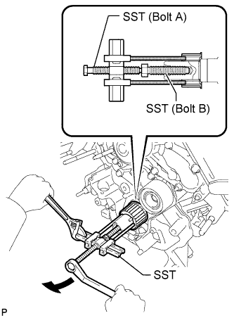
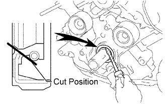

FRONT CRANKSHAFT OIL SEAL > REMOVAL |
| 1. DISCONNECT CABLE FROM NEGATIVE BATTERY TERMINAL |
| 2. REMOVE TIMING BELT |
Remove the timing belt (Click here).
| 3. REMOVE CRANKSHAFT TIMING PULLEY |
 |
Using SST, remove the timing pulley.
| Item | Parts number |
| SST (Bolt A) | 09953-05020 |
| SST (Bolt B) | 09953-05010 |
| 4. REMOVE OIL PUMP SEAL |
 |
Using a knife, cut off the lip of the oil seal.
Using a screwdriver, pry out the oil seal.